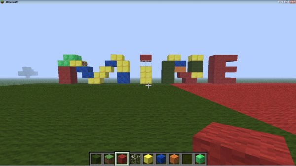
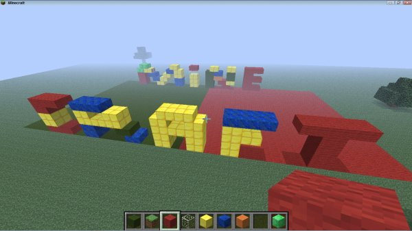
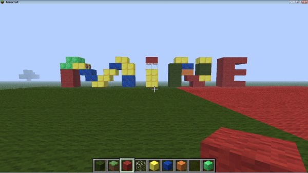
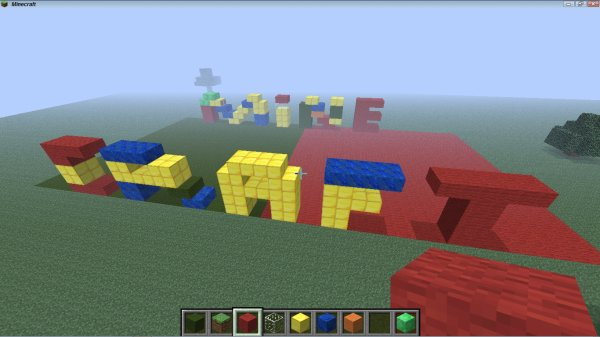
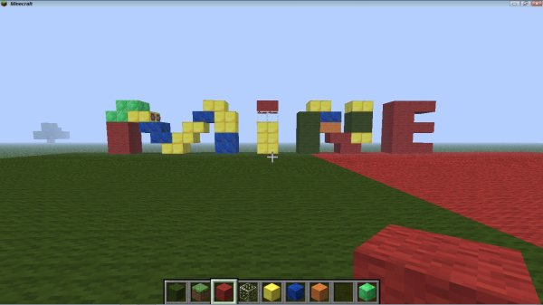
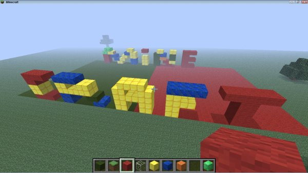

![[ANA JDG] Asterix and the Great Rescue - Megadrive](../vi/6oUXi0ckLmA/default.jpg)
![[ Présentation pour la chaîne Grenier des Joueurs ] JDG Prod](../art/SHAR.6419.583.2.jpg)


https://pipl.com/
Je sais que vous vous en foutez parce que vous n'avez rien à cacher mais laisser-moi vous mettre en garde car ce site peut ruiner votre vie sur internet,révéler votre véritable identité!
Ce site sait vous retrouver grâce à votre nom-prénom IRL,votre pseudo,numéro de téléphone et adresse e-mail!
Comment être anonyme avec un site aussi bien renseigner?
Facebook,Google+,YouTube,Picasas...bon,ok,tout Google et Facebook ainsi que Twitter livre vos informations à ce site de cherche de personne sur internet!
Vous pouvez tout savoir sur la personne qui vous trolle depuis un forum ou un Facebook ou encore un commentaire YouTube!
Vous êtes fichus si vous avez osé mettre votre vrai nom et prénom car avec déjà des informations comme celles-là,ils peuvent vous emmerder pendant un bon bout de temps!
Vous connaissez les adolescents qui se sont suicidés grâce à Facebook? Pipl.com n'est pas innocent dans cette histoire!
Vous pouvez savoir tout d'une personne:
-Casier judiciaire,
-Adresse postale,
-Vidéos sur YouTube,
-Famille,
-Photos sur le Web,
-...
Même si c'est privé sur Facebook,vous pouvez tout savoir sur les amis,la famille et les statuts!
OUI,nous sommes fichus,nous pauvres anonymous!
En plus,pipl.com n'est pas sur Wikipédia
https://fr.wikipedia.org/w/index.php?
title=Sp%C3%A9cial%3ARecherche&profile=default&search=pipl.com&fulltext=Search&searchengineselect=mediawiki
Ce genre de site doit être illégal,il n'y a que la police d'état qui devrait y accéder!
Voila,merci de m'avoir lu et si vous savez y faire quelque chose,allez-y,pour nos libertés et nos identités!
KidpaddleetcieGlin
Description :
Le Blog d'une personne aillant découvert internet en 2007 qui partage une partie de sa vie mais surtout ses réflexions, ses découvertes et ses cours!
Bon, je ne vous garantit pas que 100% du contenu est fiable mais aux moins je l'approuve! :)
N'oubliez pas de me retrouver sur les autres sites internet du réseaux KidpaddleetcieGlin retrouvable dans le premier article de chaque page. ^-^
Bon, je ne vous garantit pas que 100% du contenu est fiable mais aux moins je l'approuve! :)
N'oubliez pas de me retrouver sur les autres sites internet du réseaux KidpaddleetcieGlin retrouvable dans le premier article de chaque page. ^-^
Je bosse actuellement pour la chaîne Grenier des Joueurs
Son morceau préféré
Retour au blog de KidpaddleetcieGlin
Beaucoup de gens ne comprennent pas la différence entre l'ADN et l'ARN alors je poste une synthèse!

La séquence en acide aminés des protéines est imposée pas l'information génétique située dans la molécule d'ADN.
Un gêne est défini comme une séquence de nucléotide d'un brin d'ADN déterminant la synthèse d'une protide donné.
Un petit peu de vocabulaire:
La séquence en acide aminés des protéines:
La séquence en acide aminés des protéines est imposée pas l'information génétique située dans la molécule d'ADN.
Un gêne:
La molécule d'ADN d'un chromosome:
La molécule d'ADN d'un chromosome est le support de très nombreux gêne.
Les étapes de l'expression de l'information génétique:
L'expression de l'information génétique se fait en deux étapes: la Transcription et la Traduction.
1)La transcription
Au cours de la transcription, un ARN messager complémentaire du brins transcrit de l'ADN est copié.
2)La traduction
La traduction permet la synthèse de chaînes polypeptidiques.
La traduction débute au codon (triplet de nucléotide) d'AUG (Méthionine) et s'arrête au codon UGA (Stop).
Le code génétique:
Le code génétique est universel et redondant.
Vous voulez avoir tout ça en synthèse sous Flash? EN VOICI UNE :
POUR ALLER UN PEU PLUS LOIN:
Je vous propose de consulter ces vidéos pour en savoir plus!
Ces vidéos sont presque tous des pilotes de séries d'explication du fonctionnement de l'ADN donc n'hésiter pas à consulter les recommandations de YouTube après le visionnement!
Je sais que beaucoup de gens ont des problèmes avec la langue de
William Shakespeare,je vous propose une synthèse à télécharger!
http://www.4shared.com/file/4S4wJINIba/Tous_les_temps_en_anglais.html
Vous voulez peut-être l'aperçus avant de télécharger? Le voici:
![[Synthèse Anglaise]TOUS LES TEMPS EN ANGLAIS !!!](../5252/79895252/pics/3214323055_1_4_yferZkUd.jpg)
Voici aussi une version textuelle:
==========================================================================
William Shakespeare,je vous propose une synthèse à télécharger!
http://www.4shared.com/file/4S4wJINIba/Tous_les_temps_en_anglais.html
Vous voulez peut-être l'aperçus avant de télécharger? Le voici:
Voici aussi une version textuelle:
==========================================================================
LE PRÉSENT
Present simple ( Sujet + Verbe ) :
Action qui arrive régulièrement.
Present continuous (Sujet + am/are/'s + verbe-ing):
Action qui arrive en ce moment, est en train d'arriver.
Present continuous (Sujet + am/are/'s + verbe-ing):
Action qui arrive en ce moment, est en train d'arriver.
LE PASSÉ
Past simple (Sujet + verbe-ed):
Action passée et datée.
Past continuous (Sujet+was+verbe-ing):
Action d'une certaine durée qui s'est passée.
Present perfect (Sujet+ have/had +verbe-ed):
Action qui vient de se produire à l'instant.
Present perfect continuous (Sujet+have/had+been+verbe-ing):
Action qui a commencé dans le passé et qui continue dans le présent.
Past perfect (Sujet+have/had+verbe-ed):
Les 2 actions sont liées,l'une finissant quand l'autre commence.
Past perfect continuous (Sujet+have/had+been+verbe-ing):
Les 2 actions sont liées,l'une finissant quand l'autre commence pendant une certaine durée.
LE FUTUR OU L'HABITUDE
Will future (Sujet + will +verbe):
C'est une prédiction, il se peut que l'action soit réalisée.
Going to future (Sujet+am/are/is+going+verbe):
C'est un projet, c'est partit pour le faire.
Future continuous (Sujet + will + be + verbe-ing ):
Action future et habituelle.
Future perfect (Sujet + will + have/had +verbe-ed ):
Action accomplie d'ici demain.
Will future (Sujet + will +verbe):
C'est une prédiction, il se peut que l'action soit réalisée.
Going to future (Sujet+am/are/is+going+verbe):
C'est un projet, c'est partit pour le faire.
Future continuous (Sujet + will + be + verbe-ing ):
Action future et habituelle.
Future perfect (Sujet + will + have/had +verbe-ed ):
Action accomplie d'ici demain.
LES CONDITIONNELS ( en gros, c'est pour parler de probabilité)
Conditional simple (Sujet + would + verbe):
Action probable.
Conditional continuous (Sujet + would+ verbe-ing):
Action probable en insistant sur la durée.
Conditional perfect ( Sujet + would + have/had + verbe-ed):
Action future avec notion de probabilité.
Conditional perfect continuous (Sujet + would + have/had + been +verbe-ing):
Action future avec notion de probabilité en insistant sur la durée.
==========================================================================
Sachez qu'il y a aussi cette page d'anglaisfacile.com pour avoir encore plus de précision dans une synthèse et de petits exercices : https://www.anglaisfacile.com/exercices/exercice-anglais-2/exercice-anglais-2876.php

Attribution License
Cette licence permet aux autres de distribuer vos créations, de les remixer, de les modifier légèrement et de les utiliser pour en créer de nouvelles, y compris à des fins commerciales, à condition que votre crédit soit mentionné pour la réalisation originale. C'est la licence la plus arrangeante qui soit. Elle est recommandée pour une diffusion et une utilisation optimales des ½uvres sous licence.[Copier-coller de http://vimeo.com/creativecommons/by]
Attribution Share Alike
Cette licence permet aux autres de remixer vos créations, de les modifier légèrement et de les utiliser pour en créer de nouvelles, y compris pour des fins commerciales, à condition que votre crédit soit mentionné et que ces créations soient placées sous une licence identique à la vôtre. Cette licence est souvent comparée aux licences « copyleft » gratuites des logiciels libres. Toutes les nouvelles ½uvres basées sur votre travail porteront la même licence, par conséquent leurs dérivés autoriseront aussi une utilisation commerciale. Cette licence est utilisée par Wikipedia, et elle est recommandée pour les supports qui bénéficieraient d'une incorporation de contenu Wikipedia et de projets sous licence similaires.[Copier-coller de http://vimeo.com/creativecommons/by-sa]
Attribution No Derivatives
Cette licence autorise la redistribution à des fins commerciales et non commerciales, dans la mesure ou l'objet n'est pas modifié et est transmis en intégralité et dans la mesure où il est fait mention de votre personne.[Copier-coller de http://vimeo.com/creativecommons/by-nd]
Attribution Non-Commercial
Cette licence permet aux autres utilisateurs de faire un remix, d'adapter et de développer vos ½uvres à des fins non commerciales, et bien que leurs nouvelles créations doivent vous mentionner et ne doivent pas servir à des fins commerciales, ils n'ont pas l'obligation d'établir une licence selon les mêmes termes concernant leurs ½uvres dérivées.[Copier-coller de http://vimeo.com/creativecommons/by-nc]
Non-Commercial Share Alike
Cette licence permet aux autres utilisateurs de faire un remix, d'adapter et de développer vos ½uvres à des fins non commerciales, tant qu'ils vous mentionnent et établissent une licence pour leurs nouvelles créations avec des termes identiques.[Copier-coller de http://vimeo.com/creativecommons/by-nc-sa]
Non-Commercial No Derivatives
Cette licence est la plus restrictive de nos six licences principales car elle permet seulement aux autres utilisateurs de télécharger vos ½uvres et de les partager avec d'autres personnes tant qu'ils vous mentionnent mais ils ne peuvent en aucun cas les modifier ou les utiliser à des fins commerciales.[Copier-coller de http://vimeo.com/creativecommons/by-nc-nd]

(J'ai pris la version "Vimeo" car on peut la télécharger :p)
Paroles:
[Intro : Orelsan]
Comment c'est nul ! Ah, l'enculé, il s'est foutu d'notre gueule avec son album de merde ! Attends, attends, fais voir le disque...
[Couplet 1 : Orelsan]
Est-ce que tu peux m'prêter ta batte ? On va lui péter la boîte
Empêche cet enculé d'bouger pendant qu'j'lui mets des patates
Pas besoin d'écouter, j'sais qu'il est nul à chier rien qu'avec le tracklist
On vient en studio effacer chaque piste, on va péter les doigts d'ton graphiste
Ta pochette : on la brûle, on arrache les pages une par une, une par une ?
Une par une ! On fait des tons-car', on la fume
J'mets ton album dans la voiture et j'vais la crasher contre un mur
Donne moi ta maquette après l'concert, elle finit sous les roues du tour-bus
Ton album de fils de pute, j'lance une bombe atomique dessus
J'le télécharge illégalement et j'fais sauter mon disque dur
On va voler ton CD, on va cogner ton CD
J'mettrai ma bite dans la rondelle et on va violer ton CD
On va violer ton CD, on va violer ton CD !
[Couplet 2 : Gringe]
J'enfile des Doc Martens coquées, j'mets un pointard dans sa tête
J'm'entraîne à danser des claquettes sur sa sale face de tapette
J'le tartine sur du pain, j'le mange et j'vomis sur la jaquette
On va faire du frisbee avec, le rentrer dans un lecteur cassettes
Bâtard ! J'vais lui faire un joli gommage avec du verre pilé
L'brûler vivant, t'ramener les cendres et te l'faire sniffer
On va planter ton CD, l'attacher et l'torturer ton CD
On va lui éplucher la peau et râper des citrons sur ton CD
Tu veux savoir qu'est-c'qu'j'en pense ? Il va pleuvoir d'la merde cette automne
Pourquoi ? Parce que c'est d'la merde en branche, j'ai envie d'm'en couper une comme Van Gogh
On avorte sa descendance, on lui brûle ses trompes de Fallope
On va lui péter ses dents blanches, coup d'coude sur sa tronche de salope !
[Refrain x4 : Orelsan & Gringe]
On va buter ton CD ! On va buter ton CD !
Ton CD ! Ton CD ! On va buter ton CD !
(Source:http://rapgenius.com/Casseurs-flowters-19h26-la-mort-du-disque-lyrics)
Nous sommes en début 2014,la Wii U,la Playstation 4 et la Xbox One sont les consoles actuelles.
En près de 20 ans,nous avons dit adieu à Atari,sa dernière console fût la jaguar (1996),et à SEGA,sa dernière console fût la Dreamcast (2004).
Nous avons dit bonjour à Philips,pour sa CD-i (1992) mais elle n'a pas fait long feu
(elle n'est plus vendu pour un usage domestique),à Sony,pour ses Playstation et à Microsoft pour ses Xbox.
Voici mon avis sur chaque marque de console de jeux-vidéos:
Nintendo: La marque qui a laisser des traces indélébiles sur nos manettes,notamment la croix directionnelle,L1 et R1,les vibrations,...
Sans Nintendo,Sony n'aurait pas eût sa première Playstation.
SEGA: La marque de jeux-vidéo et de console de jeux-vidéos (comme Nintendo) qui a créer la première console avec internet sans foiré sa rapidité et en facilitant la programmation sur sa machine grâce à Windows CE (je parle de la Dreamcast).
Sony: Le géant technologique créateur de walkman rejoint le marché des consoles de jeux-vidéos en créant le support CD de la Playstation.
Il tua SEGA avec sa publicité abusive pour la Playstation 2.
Microsoft: La société de Windows rentre sur le marché des consoles après la défaite de SEGA pour lutter contre le fléau "Sony" (malgré qu'il l'imite dans ses capacités),il a même eût l'idée de racheter SEGA mais Bill Gates (Patron de Microsoft) ne fût pas d'accord.
(il ne pensait pas que SEGA puisse avoir assez de muscles pour arrêter SONY)
Atari: La marque technologique qui a fait la première console grand public mais qui assista au krash du jeux-vidéo (1983) .
Le krash du jeux-vidéo lui fût perdre énormément d'argent.
Philips: Pour montrer ses capacités dans le support CD,Philips rentre avec la CD-i
(créer par les grands de l'électronique (Philips, Sony et Matsushita) )
sur le marché des consoles de jeux-vidéos mais malgré le travail de 3 grandes entreprises technologiques,ses jeux-vidéos sont remplis de bugs ou des cinématiques moches
(vous pouvez les retrouver dans les YouTube Poop) et ruinant certaine licence comme Zelda et Mario (Nintendo voulait tester la console de Philips,le résultat est désastreux).
Voila,merci de m'avoir lu et j'espère vous avoir appris quelques chose sur ces marques de consoles de jeux-vidéos!
En près de 20 ans,nous avons dit adieu à Atari,sa dernière console fût la jaguar (1996),et à SEGA,sa dernière console fût la Dreamcast (2004).
Nous avons dit bonjour à Philips,pour sa CD-i (1992) mais elle n'a pas fait long feu
(elle n'est plus vendu pour un usage domestique),à Sony,pour ses Playstation et à Microsoft pour ses Xbox.
Voici mon avis sur chaque marque de console de jeux-vidéos:
Nintendo: La marque qui a laisser des traces indélébiles sur nos manettes,notamment la croix directionnelle,L1 et R1,les vibrations,...
Sans Nintendo,Sony n'aurait pas eût sa première Playstation.
SEGA: La marque de jeux-vidéo et de console de jeux-vidéos (comme Nintendo) qui a créer la première console avec internet sans foiré sa rapidité et en facilitant la programmation sur sa machine grâce à Windows CE (je parle de la Dreamcast).
Sony: Le géant technologique créateur de walkman rejoint le marché des consoles de jeux-vidéos en créant le support CD de la Playstation.
Il tua SEGA avec sa publicité abusive pour la Playstation 2.
Microsoft: La société de Windows rentre sur le marché des consoles après la défaite de SEGA pour lutter contre le fléau "Sony" (malgré qu'il l'imite dans ses capacités),il a même eût l'idée de racheter SEGA mais Bill Gates (Patron de Microsoft) ne fût pas d'accord.
(il ne pensait pas que SEGA puisse avoir assez de muscles pour arrêter SONY)
Atari: La marque technologique qui a fait la première console grand public mais qui assista au krash du jeux-vidéo (1983) .
Le krash du jeux-vidéo lui fût perdre énormément d'argent.
Philips: Pour montrer ses capacités dans le support CD,Philips rentre avec la CD-i
(créer par les grands de l'électronique (Philips, Sony et Matsushita) )
sur le marché des consoles de jeux-vidéos mais malgré le travail de 3 grandes entreprises technologiques,ses jeux-vidéos sont remplis de bugs ou des cinématiques moches
(vous pouvez les retrouver dans les YouTube Poop) et ruinant certaine licence comme Zelda et Mario (Nintendo voulait tester la console de Philips,le résultat est désastreux).
Voila,merci de m'avoir lu et j'espère vous avoir appris quelques chose sur ces marques de consoles de jeux-vidéos!
0
|

J'ai marqué en bleu les slogans!
J'ai incrusté les logos!
J'ai mis en-dessous des logos les technologies/gadgets importer dans les manettes/consoles!
Le fameux personnage gaffeurs mais génial de André Franquin fête ses 57 ans ce 28 février 2014.
Pour ceux qui veut savoir,Google l'a fêté:
http://www.dhnet.be/medias/multimedia/google-met-gaston-lagaffe-a-l-honneur-53103c6035708d729d849b57
Plus d'info:
http://fr.wikipedia.org/wiki/Gaston_Lagaffe
http://www.dupuis.com/seriebdfr/gaston/37/
http://www.bedetheque.com/serie-31-BD-Gaston.html
Gaston Lagaffe est certainement un des héros de BD franco-belge des plus légendaire qui a été créer en 1957 dans le fameux journal de Spirou!
Il est gentil,débrouillard mais maladroit...le défaut le plus connu de notre héros!
L'origine de son nom est due aux multiples gaffes qu'il fait pendant la totalité de ses planches!
Pour ceux qui veut savoir,Google l'a fêté:
http://www.dhnet.be/medias/multimedia/google-met-gaston-lagaffe-a-l-honneur-53103c6035708d729d849b57
Plus d'info:
http://fr.wikipedia.org/wiki/Gaston_Lagaffe
http://www.dupuis.com/seriebdfr/gaston/37/
http://www.bedetheque.com/serie-31-BD-Gaston.html
Gaston Lagaffe est certainement un des héros de BD franco-belge des plus légendaire qui a été créer en 1957 dans le fameux journal de Spirou!
Il est gentil,débrouillard mais maladroit...le défaut le plus connu de notre héros!
L'origine de son nom est due aux multiples gaffes qu'il fait pendant la totalité de ses planches!

J'ai trouvé un visage super-étendu sur internet grâce à un surfeur de tout les jours!

Le nom de l'origine de ce visage est "Yaranaika"
C'est assez dur à expliquer...
C'est gay XD
Google Traduction:
http://translate.google.be/?hl=fr#ja/fr/%E3%82%84%E3%82%89%E3%81%AA%E3%81%84%E3%81%8B
J'en ai fait un petit montage,pour nous faire marrer! :)

Voila,à vous d'imaginer la chose XD
Le nom de l'origine de ce visage est "Yaranaika"
C'est assez dur à expliquer...
C'est gay XD
Google Traduction:
http://translate.google.be/?hl=fr#ja/fr/%E3%82%84%E3%82%89%E3%81%AA%E3%81%84%E3%81%8B
J'en ai fait un petit montage,pour nous faire marrer! :)
Voila,à vous d'imaginer la chose XD
Je me présente,
Je me nomme Glin Kidpaddleetcie,Glin est mon prénom.
J'ai 7 ans et je suis artiste!
Je créer sur tout les genres de médias à l'exception de l'audio car il se combine à un visuel pour former une vidéo.
J'aime bien les jeux-vidéos de plateforme et de gestion.
Je soutiens surtout la marque de jeu-vidéo "Nintendo" car ils sont producteurs de consoles et de jeu-vidéo ainsi que le moins cher du marché.
Je n'aime pas les conditions du droit d'auteur actuel sur YouTube car ils limite beaucoup mes créations et me fait craindre la perte de création/projet déjà avancé.
J'ai une petite s½ur de 2 ans nommée FanYoshiBleu,elle est fan de Nintendo depuis que'elle a touché à la Super-Nintendo.
Les programmes que j'emplois le plus sont:
-Magix Video Deluxe 2007,
-Paint.NET,
-Google Chrome.
Mon but est de créer un petit réseau nommé "Kidpaddleetcie" qui répertorie mes oeuvres et donne la possibilité aux gens de les ré-utiliser pour créer un répertoire encore plus grand et plus varié!
Je me nomme Glin Kidpaddleetcie,Glin est mon prénom.
J'ai 7 ans et je suis artiste!
Je créer sur tout les genres de médias à l'exception de l'audio car il se combine à un visuel pour former une vidéo.
J'aime bien les jeux-vidéos de plateforme et de gestion.
Je soutiens surtout la marque de jeu-vidéo "Nintendo" car ils sont producteurs de consoles et de jeu-vidéo ainsi que le moins cher du marché.
Je n'aime pas les conditions du droit d'auteur actuel sur YouTube car ils limite beaucoup mes créations et me fait craindre la perte de création/projet déjà avancé.
J'ai une petite s½ur de 2 ans nommée FanYoshiBleu,elle est fan de Nintendo depuis que'elle a touché à la Super-Nintendo.
Les programmes que j'emplois le plus sont:
-Magix Video Deluxe 2007,
-Paint.NET,
-Google Chrome.
Mon but est de créer un petit réseau nommé "Kidpaddleetcie" qui répertorie mes oeuvres et donne la possibilité aux gens de les ré-utiliser pour créer un répertoire encore plus grand et plus varié!
 Vous pouvez vous en inspirer :)
Vous pouvez vous en inspirer :)Pour plus de précision:
Afin d'optimiser votre prise d'information:
http://www.academie-en-ligne.fr/Ecole/RessourcesInformatives.aspx?PREFIXE=AL5FFM2&CONCEPT=AL5FFM2-INTR-223681-1
https://mediacim2013.wordpress.com/2013/05/20/analyser-la-une-dun-journal/
Ce samedi 25 janvier 2014,j'ai repris une bonne vieille animation sur Shigeru Miyamoto:
N'aiment pas l'audio (Gangster Trippin-Fatboy Slim),j'ai décider de le remixer pour en faire comme une histoire avec les sons des SuperMario,The Legend Of Zelda et Donkey Kong!
Voici le résultat:
C'est vraiment un pure bonheur de la revoir dans ses deux versions :)
Bien sur,j'ai quand même rien modifié de la partie visuelle et je n'ai pas signer
(j'm'en fout,ch'uis un lapin)!
Voici une chanson de Stromae (ENCORE :) ) qui prouve son dévouement dans sa carrière musicale!
J'apprécie cette chanson car le rythme n'est pas constant et s'adapte à ses paroles!
En plus,je crois comprendre qu'il compare sa musique à une drogue!
Les paroles:
Tous les matins
Je prends un bol de musique
Et une tasse aussi
Ensuite j'enfile une partition
Et je ferme ces boutons en la la do si si
Je me dépêche
Sinon je serai en retard
Donc je termine et je file en bas
Je saute dans ma caisse à infra-basses
Et je roule à une vitesse de 100.000 watts
Je fuis, j'arrive, je bosse et
Je mixe des coups de fil
J'écris, compose et
Répond à mes mails-odies
Ensuite, je me nourris
Du son dans la boîte à rythmes
C'est la pause, celle de midi
C'est l'heure de la mu-mu-musique
Ouais c'est ma clope, mon shit
Ma dose, ma weed
Ma coke, mon speed
Mon crack, ma musique
Ma clope, mon shit
Ma dose, ma weed
Ma coke, mon speed
Mon crack, ma musique (x2)
Tous les après-midis
Je reprends une tasse tout d'suite
Je fais comme si
J'envoyais des mails et des mails
Et des mail-odies
Pour que le temps passe vite
Mais il ralentit
Mon métronome me le dit
Mais c'est ma tête qui le pense
Ou bien qui le crie
Qu'elle est pressée d'être repartie
Mais cette fois-là
Pédale à fond, en vain
Ce sont les bouchons
Qui marquent le tempo
Au rythme des klaxons
Et dans le fond, une chanson
Qui rappelle le silence
D'un soleil en decrescendo
En crescendo demain
J'espère qu'je m'lèverai tôt
Pour que j'obtienne ma dose
Que je m'injecte un micro
Que j'en sois accroc
Et que j'en crève
Parce que j'me lèverai tôt
Et je m'injecterai ma dose
De micros, d'overproses
Jusqu'à c'qu'ils soient mes rêves (écho)
Jusqu'à c'qu'ils soient mes rêves (écho)
Ouais c'est ma clope, mon shit
Ma dose, ma weed
Ma coke, mon speed
Mon crack, ma musique
Ma clope, mon shit
Ma dose, ma weed
Ma coke, mon speed
Mon crack, ma musique (x4)
Ouais c'est ma clope, clope, mon shit
Ma dose, ma weed
Ma coke, coke, mon speed
Mon crack, ma musique
Je prends un bol de musique
Et une tasse aussi
Ensuite j'enfile une partition
Et je ferme ces boutons en la la do si si
Je me dépêche
Sinon je serai en retard
Donc je termine et je file en bas
Je saute dans ma caisse à infra-basses
Et je roule à une vitesse de 100.000 watts
Je fuis, j'arrive, je bosse et
Je mixe des coups de fil
J'écris, compose et
Répond à mes mails-odies
Ensuite, je me nourris
Du son dans la boîte à rythmes
C'est la pause, celle de midi
C'est l'heure de la mu-mu-musique
Ouais c'est ma clope, mon shit
Ma dose, ma weed
Ma coke, mon speed
Mon crack, ma musique
Ma clope, mon shit
Ma dose, ma weed
Ma coke, mon speed
Mon crack, ma musique (x2)
Tous les après-midis
Je reprends une tasse tout d'suite
Je fais comme si
J'envoyais des mails et des mails
Et des mail-odies
Pour que le temps passe vite
Mais il ralentit
Mon métronome me le dit
Mais c'est ma tête qui le pense
Ou bien qui le crie
Qu'elle est pressée d'être repartie
Mais cette fois-là
Pédale à fond, en vain
Ce sont les bouchons
Qui marquent le tempo
Au rythme des klaxons
Et dans le fond, une chanson
Qui rappelle le silence
D'un soleil en decrescendo
En crescendo demain
J'espère qu'je m'lèverai tôt
Pour que j'obtienne ma dose
Que je m'injecte un micro
Que j'en sois accroc
Et que j'en crève
Parce que j'me lèverai tôt
Et je m'injecterai ma dose
De micros, d'overproses
Jusqu'à c'qu'ils soient mes rêves (écho)
Jusqu'à c'qu'ils soient mes rêves (écho)
Ouais c'est ma clope, mon shit
Ma dose, ma weed
Ma coke, mon speed
Mon crack, ma musique
Ma clope, mon shit
Ma dose, ma weed
Ma coke, mon speed
Mon crack, ma musique (x4)
Ouais c'est ma clope, clope, mon shit
Ma dose, ma weed
Ma coke, coke, mon speed
Mon crack, ma musique
Stromae a également fait un genre de "making-of":
Stromae is just genius :) Genius is just Stromae!
Bonjour (ou bonsoir),j'ai appris que YouTube renforce son pire défaut!
Voici quelques vidéo pour en savoir plus:
YouTube a beaucoup de défaut,certes,mais les meurtres du droits d'auteur sont les seules qui ruinent réellement au service!
Grâce à ce renforcement,nous sommes contraint à ne plus employé la culture sans les acheter à prix fort!
N'oublier pas que même si vous acheter un CD,son contenu ne vous appartient pas et vous ne pouvez pas le reproduire!
Et oui,vous devez créer tout ça vous-même:
-Musique,
-Image,
-Animation,
-Narration,
-...
Bien sur,il faut créer tout ça SANS INCRUSTER DU CONTENU TIERS!
Vous êtes tout seul pour faire votre vidéo,
Vous êtes tout seul pour chier dans le pot!
C'est vrai,vous ne pouvez pas utiliser les contenu que vous écouter 24h/24!
Voila,je pense que vous avez compris mon point de vue sur le sujet!
Pour lutter contre ce renforcement et faire bouger les choses,voici ce que vous pouvez faire:
Rejoindre ce groupe qui font "une journée sans YouTube" (22 décembre 2013):
https://www.facebook.com/events/630867476970658/?fref=ts
Signer cette pétition qui demande à YouTube de "réviser leur politique sur les ayants-droits"
https://secure.avaaz.org/fr/petition/Salar_Kamangar_PDG_de_Youtube_Revisez_votre_politique_sur_les_ayantsdroits/?sOPxxdb
Je me suis également cassé le cul à faire deux vidéos pour cette événement:
Voici quelques vidéo pour en savoir plus:
YouTube a beaucoup de défaut,certes,mais les meurtres du droits d'auteur sont les seules qui ruinent réellement au service!
Grâce à ce renforcement,nous sommes contraint à ne plus employé la culture sans les acheter à prix fort!
N'oublier pas que même si vous acheter un CD,son contenu ne vous appartient pas et vous ne pouvez pas le reproduire!
Et oui,vous devez créer tout ça vous-même:
-Musique,
-Image,
-Animation,
-Narration,
-...
Bien sur,il faut créer tout ça SANS INCRUSTER DU CONTENU TIERS!
Vous êtes tout seul pour faire votre vidéo,
Vous êtes tout seul pour chier dans le pot!
C'est vrai,vous ne pouvez pas utiliser les contenu que vous écouter 24h/24!
Voila,je pense que vous avez compris mon point de vue sur le sujet!
Pour lutter contre ce renforcement et faire bouger les choses,voici ce que vous pouvez faire:
Rejoindre ce groupe qui font "une journée sans YouTube" (22 décembre 2013):
https://www.facebook.com/events/630867476970658/?fref=ts
Signer cette pétition qui demande à YouTube de "réviser leur politique sur les ayants-droits"
https://secure.avaaz.org/fr/petition/Salar_Kamangar_PDG_de_Youtube_Revisez_votre_politique_sur_les_ayantsdroits/?sOPxxdb
Je me suis également cassé le cul à faire deux vidéos pour cette événement:
Vous vous souvenez de ce sons créer le 20 juillet 2013?
-----------------------------------------------------------------------------------------------------------------------------------------------------
Les paroles sont à ce lien:
http://kidpaddleetcieglin.skyrock.com/3175203949-Essai-Rap-pour-Mario-XD-lol.html
La musique d'origine:
http://www.youtube.com/watch?v=TmGQAjCVi0U
-----------------------------------------------------------------------------------------------------------------------------------------------------
J'en ai créer un clip avec des extraits d'interview de Shigeru Myamoto:
Et je l'ai sous-titré après lui avoir trouvé le titre final "Never The End With Nintendo":
Si vous allez sur YouTube (sur sa page de visionnement) vous pouvez appuyez sur un gros bouton "Remixer cette vidéo" qui vous l'a postera sur votre chaîne YouTube!
Si vous ne savez/voulez pas lire sur YouTube,la version final est également sur Dailymotion:
Créons un même internet ensemble ^_^ !
-----------------------------------------------------------------------------------------------------------------------------------------------------
Les paroles sont à ce lien:
http://kidpaddleetcieglin.skyrock.com/3175203949-Essai-Rap-pour-Mario-XD-lol.html
La musique d'origine:
http://www.youtube.com/watch?v=TmGQAjCVi0U
-----------------------------------------------------------------------------------------------------------------------------------------------------
J'en ai créer un clip avec des extraits d'interview de Shigeru Myamoto:
Et je l'ai sous-titré après lui avoir trouvé le titre final "Never The End With Nintendo":
Si vous allez sur YouTube (sur sa page de visionnement) vous pouvez appuyez sur un gros bouton "Remixer cette vidéo" qui vous l'a postera sur votre chaîne YouTube!
Si vous ne savez/voulez pas lire sur YouTube,la version final est également sur Dailymotion:
Créons un même internet ensemble ^_^ !
Paroles:
Si on ne peut apprendre que par soi-même tout ce qu'il y a d'important à savoir, alors personne ne peut nous enseigner ce que chacun devrait comprendre.
Comment savoir ce qu'il est essentiel de connaître si on tente de nous apprendre ce qui a été compris par un autre.
On veut nous faire comprendre qu'il nous faut apprendre, alors qu'on devrait simplement nous apprendre à comprendre.
Si l'on se contente de retenir ce qui est écrit comme une feuille retient l'encre, alors c'est nous qui sommes des livres.
La société serait une bibliothèque où on nous apprend à rester bien rangés, et chaque traumatisme de la vie serait un marque page qui nous rappelle ce que l'on aimerait oublier.
Je me suis dit "Pourquoi garder un fond d'écran que j'ai mis à jour alors que je sais me détacher de cette base pour faire mieux?" et je me suis mis à créer un nouveau fond pour mon écrans!


Un style un peu plus épuré pour placé mes icônes ^^ !
Avant:
Maintenant:
Un style un peu plus épuré pour placé mes icônes ^^ !
Je me suis amusé à d'abord créer une maquette en LEGO et je l'ai refaite dans Minecraft!
Par contre,j'ai du faire quelque petit calcul:
Sur les cubes LEGO,il y a des embouts,les petits cylindres!
J'ai donc pris les proportions comme ça:
1 embout=1 cube Minecraft!
Du coup,1 cube LEGO = 4 cubes Minecraft !


 


Par contre,j'ai du faire quelque petit calcul:
Sur les cubes LEGO,il y a des embouts,les petits cylindres!
J'ai donc pris les proportions comme ça:
1 embout=1 cube Minecraft!
Du coup,1 cube LEGO = 4 cubes Minecraft !

Depuis quelque jours,Google+ semble devenir important pour garder la liberté de communiquer entre YouTubeurs!
Les commentaires YouTube ont disparu pour faire place à des commentaires de Google+!
Du coup,pour communiquer entre YouTubeur...il faut avoir Google+!
Google+ est un réseau social,comme Facebook,lancé par Google le 28 juin 2011 (merci Wikipédia).
Il faut savoir que ce n'est pas le premier service de réseau social de Google:
- Orkut: créer en Janvier 2004
- Wave: créer en Septembre 2009
- Buzz: créer en Février 2010
Tous on été supprimer fautes de n'avoir aucune popularité!
Google+ aurait pût suivre la ligné de ses antécédents mais Google changea de stratégie pour le faire connaître:
"Lorsque Google présenta son nouveau réseau social encore sous version bêta, l'entreprise a décidé de commencer comme avec Gmail. Google a donc distribué des invitations à certaines personnalités du monde informatique. Et Google compte donc disséminer grâce à ces personnes dans tout le web, en ajoutant un aspect de privilège pour celui qui reçoit l'invitation. Ainsi, peu de temps après avoir ouvert ses portes, le système n'accepte plus de nouveaux entrants, pour cause de saturation et de trop forte demande, dixit Google."
( Référence: http://fr.wikipedia.org/wiki/Google%2B )
Le 20 septembre 2011, le service est ouvert aux utilisateurs sans invitation à tout utilisateur qui le souhaite!
(encore un copier-collé de Wikipédia)
Maintenant,Google+ a divers différence avec Facebook:
-Les groupes de contact se nomme des "cercles",
-Communiquer VIA Google Talk sur PC,IPhone,Android et SMS.
-Hangouts qui permet de communiquer en vidéo avec jusqu'à 10 personnes en simultané et vous pouvez envoyé votre conversation directement sur YouTube,
-Google permet depuis mars 2013 d'utiliser des Gifs animés en image de profil sur Google +!
Voila!
YouTube a donc perdu ses fonctions de communauté au profit de Google+!
Vous pouvez toujours regarder des vidéos,en poster et les partager sur les réseaux sociaux MAIS vous ne pouvez plus commenter sur le site SI vous n'avez pas de compte Google+!
Maintenant,je me pose une question de mentalité et de logique:
Un mec de Google+ est-il plus impliqué dans la conception de vidéo qu'un YouTubeur?
Et je me répond:
Un mec sur Google+ ne sait pas faire nécessairement des vidéos et ne connais pas nécessairement la mentalité d'un YouTubeur !
Le mec postera donc un commentaire non-constructif dans la majorité des cas!
Par contre,Google+ vous offre les même possibilité de post que Facebook mais avec plus de sécurité et moins de accès de personnalisation (Comme YouTube aujourd'hui)!
Par contre,Facebook est plus addictif mais moins bien organisé!
À vous de choisir,Google+ ou non?
Par-contre,c'est gratuit mais il y a un peu de PUB! ;)
...et si vous ne désirez pas donner votre présence à Google sur YouTube et Google+,vous pouvez aller voir sur Facebook et Dailymotion! ;)


Les commentaires YouTube ont disparu pour faire place à des commentaires de Google+!
Du coup,pour communiquer entre YouTubeur...il faut avoir Google+!
Google+ est un réseau social,comme Facebook,lancé par Google le 28 juin 2011 (merci Wikipédia).
Il faut savoir que ce n'est pas le premier service de réseau social de Google:
- Orkut: créer en Janvier 2004
- Wave: créer en Septembre 2009
- Buzz: créer en Février 2010
Tous on été supprimer fautes de n'avoir aucune popularité!
Google+ aurait pût suivre la ligné de ses antécédents mais Google changea de stratégie pour le faire connaître:
"Lorsque Google présenta son nouveau réseau social encore sous version bêta, l'entreprise a décidé de commencer comme avec Gmail. Google a donc distribué des invitations à certaines personnalités du monde informatique. Et Google compte donc disséminer grâce à ces personnes dans tout le web, en ajoutant un aspect de privilège pour celui qui reçoit l'invitation. Ainsi, peu de temps après avoir ouvert ses portes, le système n'accepte plus de nouveaux entrants, pour cause de saturation et de trop forte demande, dixit Google."
( Référence: http://fr.wikipedia.org/wiki/Google%2B )
Le 20 septembre 2011, le service est ouvert aux utilisateurs sans invitation à tout utilisateur qui le souhaite!
(encore un copier-collé de Wikipédia)
Maintenant,Google+ a divers différence avec Facebook:
-Les groupes de contact se nomme des "cercles",
-Communiquer VIA Google Talk sur PC,IPhone,Android et SMS.
-Hangouts qui permet de communiquer en vidéo avec jusqu'à 10 personnes en simultané et vous pouvez envoyé votre conversation directement sur YouTube,
-Google permet depuis mars 2013 d'utiliser des Gifs animés en image de profil sur Google +!
Voila!
YouTube a donc perdu ses fonctions de communauté au profit de Google+!
Vous pouvez toujours regarder des vidéos,en poster et les partager sur les réseaux sociaux MAIS vous ne pouvez plus commenter sur le site SI vous n'avez pas de compte Google+!
Maintenant,je me pose une question de mentalité et de logique:
Un mec de Google+ est-il plus impliqué dans la conception de vidéo qu'un YouTubeur?
Et je me répond:
Un mec sur Google+ ne sait pas faire nécessairement des vidéos et ne connais pas nécessairement la mentalité d'un YouTubeur !
Le mec postera donc un commentaire non-constructif dans la majorité des cas!
Par contre,Google+ vous offre les même possibilité de post que Facebook mais avec plus de sécurité et moins de accès de personnalisation (Comme YouTube aujourd'hui)!
Par contre,Facebook est plus addictif mais moins bien organisé!
À vous de choisir,Google+ ou non?
Par-contre,c'est gratuit mais il y a un peu de PUB! ;)
...et si vous ne désirez pas donner votre présence à Google sur YouTube et Google+,vous pouvez aller voir sur Facebook et Dailymotion! ;)
Je n'y étais pas mais c'est tellement médiatisé qu'il faut que je regroupe des vidéo qui se réfère à l'événement:
Avouez que c'est quand même beaucoup de violence pour un Call Of Duty XD
Mais bon,ce n'est pas très fair-play de se moquer des handicapé! :/
Avouez que c'est quand même beaucoup de violence pour un Call Of Duty XD
Mais bon,ce n'est pas très fair-play de se moquer des handicapé! :/
Jusqu'au 31 octobre 2013 à 14:00:00,nous pouvions faire des fouilles pour récupérer divers objets (des reliques le plus souvent):
-Les reliques: C'est pour les troquer contre un outil plus efficace pour les fouilles,
-Les objets du jeu : tout les bonus,les aliments et les objets du marché noirs,
-Des pièges:Il y en avait plein mais pour s'en remettre,nous devions faire une action dans le jeu!
Cette page http://ouranos.equideow.com/operation/fouille/ était surtout faite pour fêter Halloween et faire patenter avant l'heure les différents membres du jeu en leurs offrants des cadeaux pour leurs patience!

2.Découvrez ce qui s'y cache
3.Patientez pour effectuer une nouvelle fouille (votre outil actuel vous permet d'effectuer 3 fouilles toutes les 6 heures puisque j'avais une pelle)
4.Troquez vos outils et vos reliques pour obtenir des outils plus performants


En ce qui concerne le squelette,c'est le squelette d'un cheval divin nommé Osiris (cliquer pour voir le dada) et il fallait donc reconstituer tout son squelette en 54 parties!
Merci Equideow pour ces bons moments!
-Les reliques: C'est pour les troquer contre un outil plus efficace pour les fouilles,
-Les objets du jeu : tout les bonus,les aliments et les objets du marché noirs,
-Des pièges:Il y en avait plein mais pour s'en remettre,nous devions faire une action dans le jeu!
Cette page http://ouranos.equideow.com/operation/fouille/ était surtout faite pour fêter Halloween et faire patenter avant l'heure les différents membres du jeu en leurs offrants des cadeaux pour leurs patience!
Comment effectuer une fouille ?
1.Choisissez l'endroit où vous souhaitez fouiller2.Découvrez ce qui s'y cache
3.Patientez pour effectuer une nouvelle fouille (votre outil actuel vous permet d'effectuer 3 fouilles toutes les 6 heures puisque j'avais une pelle)
4.Troquez vos outils et vos reliques pour obtenir des outils plus performants
En ce qui concerne le squelette,c'est le squelette d'un cheval divin nommé Osiris (cliquer pour voir le dada) et il fallait donc reconstituer tout son squelette en 54 parties!
Merci Equideow pour ces bons moments!

Avec Ilivid (cliquer sur le mot en orange pour aller sur le site de ilivid) vous pouvez télécharger une vidéo en toute sécurité,rapidement et gratuitement!
Mon reproche avec ce programme:
Pouvons-nous télécharger des vidéos à une résolution de 720p ou 1080p parce que la majorité des vidéos que je télécharge se voient perdre en qualité lors du traitement?
Des fonctionnalités extraordinaires qui vous offre toujours plus
Le gestionnaire de téléchargement iLivid regroupe une multitude de fonctionnalités puissantes pour vous permettre de télécharger les fichiers hébergés le plus facilement et le plus rapidement possible. iLivid inclut des modules d'extension XBMC qui vous permettent de lire presque tous les formats audio et vidéo les plus populaires, peu importe le protocole et le type de média : streaming, CD, DVD, RAR et fichiers archivés depuis votre disque dur.
Lecture instantanée depuis n'importe quelle source
Le meilleur moyen pour télécharger vos films
iLivid vous offre une meilleure expérience en matière de téléchargement grâce à ces fonctionnalités extraordinaires :
Mon reproche avec ce programme:
Pouvons-nous télécharger des vidéos à une résolution de 720p ou 1080p parce que la majorité des vidéos que je télécharge se voient perdre en qualité lors du traitement?
Des fonctionnalités extraordinaires qui vous offre toujours plus
Le gestionnaire de téléchargement iLivid regroupe une multitude de fonctionnalités puissantes pour vous permettre de télécharger les fichiers hébergés le plus facilement et le plus rapidement possible. iLivid inclut des modules d'extension XBMC qui vous permettent de lire presque tous les formats audio et vidéo les plus populaires, peu importe le protocole et le type de média : streaming, CD, DVD, RAR et fichiers archivés depuis votre disque dur.
Lecture instantanée depuis n'importe quelle source
Le meilleur moyen pour télécharger vos films
iLivid vous offre une meilleure expérience en matière de téléchargement grâce à ces fonctionnalités extraordinaires :
Voici une PUB pour une amie artiste dont voici la photo (modifié par mes soins)

Voici ma PUB en vidéo en provenance de mon YouTube:
Voici ma PUB en vidéo en provenance de mon YouTube:
Partage